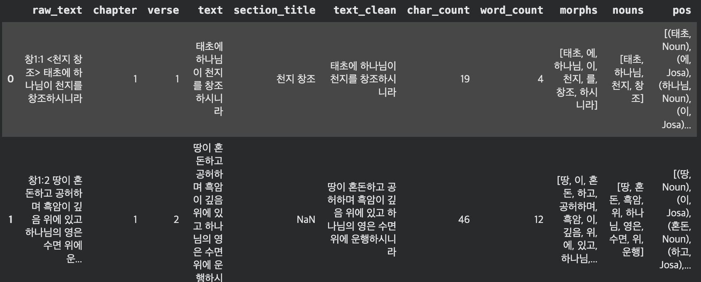
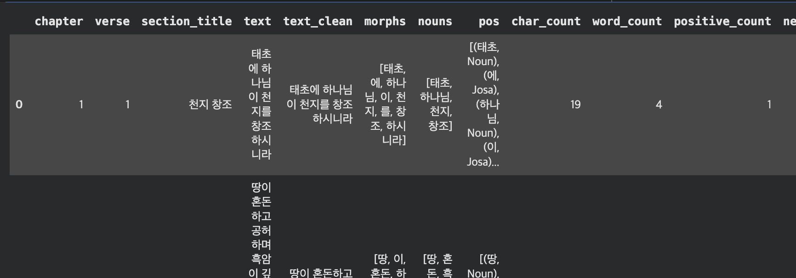
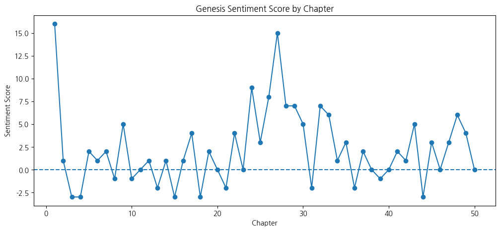
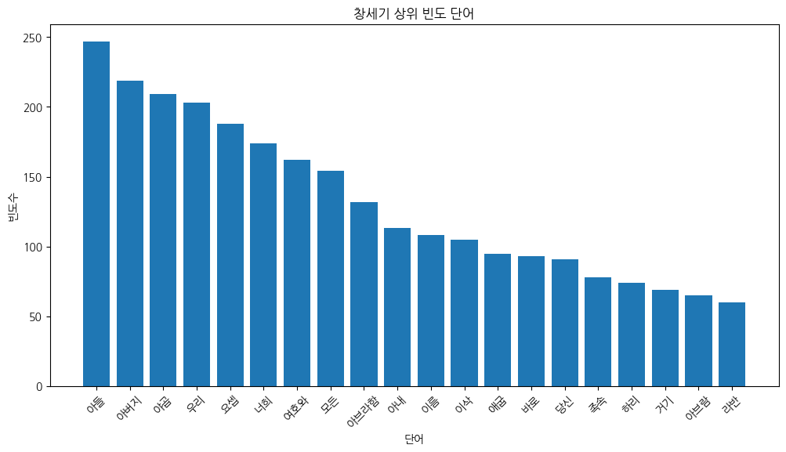
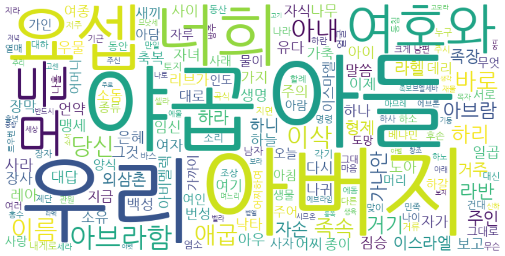
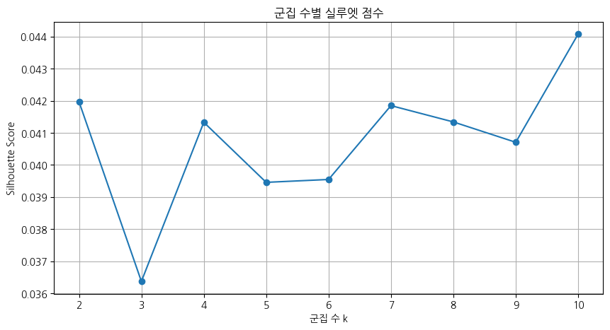
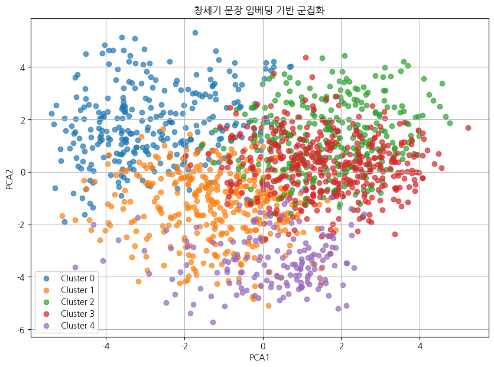

감성분석 | TXT 파일 읽기, PDF 파일 읽기, 데이터 유형 변환
1. 외부 데이터 읽기
텍스트 마이닝의 출발점은 원본 텍스트 데이터를 Python으로 불러오는 것이다. TXT 파일은 웹(URL)에서 직접 읽거나 로컬(내부) 파일로 저장된 것을 불러올 수 있으며, 결과 데이터 구조는 문자열(str), 리스트(list), 데이터프레임(DataFrame) 중 하나로 관리한다.
1. TXT 파일 읽기 → 문자열(str)
urllib.request 모듈을 사용하면 인터넷에 공개된 TXT 파일을 URL로 직접 가져올 수 있다. 한글 텍스트의 경우 decode('cp949') 옵션이 필수이며, 읽어온 결과는 하나의 긴 문자열로 저장된다.
import urllib.request
url = "https://by-sekwon.github.io/api/genesis.txt"
with urllib.request.urlopen(url) as f:
text = f.read().decode('cp949') # 인코딩 주의
print(type(text))
print(text[:200])<class 'str'>
창1:1 <천지 창조> 태초에 하나님이 천지를 창조하시니라
창1:2 땅이 혼돈하고 공허하며 흑암이 깊음 위에 있고 하나님의 영은 수면 위에 운행하시니라
창1:3 하나님이 이르시되 빛이 있으라 하시니 빛이 있었고
창1:4 빛이 하나님이 보시기에 좋았더라 하나님이 빛과 어둠을 나누사
창1:5 하나님이 빛을 낮이라 부르시고 어둠을 밤이라 부르시니라 저녁이2. TXT 파일 → 데이터프레임으로 읽기
pandas의 urllib.request.urlopen() 함수를 사용하면 URL에서 고정 너비 텍스트 파일을 바로 DataFrame으로 읽을 수 있다. 각 행이 DataFrame의 한 행(row)으로 저장되어 이후 문장 단위 분석이 용이하다.
# 외부 txt 데이터 데이터프레임으로 읽기
import pandas as pd
import urllib.request
# txt 파일 읽기 (URL은 open()으로 읽을 수 없으므로 urllib 사용)
url = 'https://by-sekwon.github.io/api/genesis.txt'
with urllib.request.urlopen(url) as f:
text = f.read().decode('cp949')
# 줄 단위 분리
lines = text.split('\n')
# 데이터프레임 생성
df = pd.DataFrame(lines, columns=['text'])
# 공백 제거
df['text'] = df['text'].str.strip()
# 빈 행 제거
df = df[df['text'] != '']
# 인덱스 재정렬
df = df.reset_index(drop=True)
# 확인
print(df.head())
print(df.shape) text
0 창1:1 <천지 창조> 태초에 하나님이 천지를 창조하시니라
1 창1:2 땅이 혼돈하고 공허하며 흑암이 깊음 위에 있고 하나님의 영은 수면 위에 운...
2 창1:3 하나님이 이르시되 빛이 있으라 하시니 빛이 있었고
3 창1:4 빛이 하나님이 보시기에 좋았더라 하나님이 빛과 어둠을 나누사
4 창1:5 하나님이 빛을 낮이라 부르시고 어둠을 밤이라 부르시니라 저녁이 되고 아침이...
(1534, 1)3.TXT 파일 읽기 → 리스트(list)로 읽기
open() 함수와 readlines() 메서드를 사용하면 로컬에 저장된 TXT 파일을 줄 단위로 읽어 리스트로 저장할 수 있다. 각 줄의 끝에 줄바꿈 문자('\n')가 포함되므로 분석 전에 strip()으로 제거하는 것이 좋다.
# 외부 txt 데이터를 list 형식으로 읽기
import urllib.request
# txt 파일 읽기 (URL은 open()으로 읽을 수 없으므로 urllib 사용)
url = 'https://by-sekwon.github.io/api/genesis.txt'
with urllib.request.urlopen(url) as f:
text = f.read().decode('cp949')
# 줄 단위로 list 생성
text_list = text.split('\n')
# 공백 제거 + 빈 행 제거
text_list = [x.strip() for x in text_list if x.strip() != '']
# 확인
print(type(text_list))
print(text_list[:5])
print(len(text_list))<class 'list'>
['창1:1 <천지 창조> 태초에 하나님이 천지를 창조하시니라', '창1:2 땅이 혼돈하고 공허하며 흑암이 깊음 위에 있고 하나님의 영은 수면 위에 운행하시니라', '창1:3 하나님이 이르시되 빛이 있으라 하시니 빛이 있었고', '창1:4 빛이 하나님이 보시기에 좋았더라 하나님이 빛과 어둠을 나누사', '창1:5 하나님이 빛을 낮이라 부르시고 어둠을 밤이라 부르시니라 저녁이 되고 아침이 되니 이는 첫째 날이니라']
15342. PDF 파일 읽기
# 설치 (최초 1회만 실행)
!pip install pdfplumber requests
import pdfplumber
import requests
from io import BytesIO
# PDF 파일 URL
pdf_url = 'https://by-sekwon.github.io/api/genesis.pdf'
# URL에서 PDF 다운로드 → 메모리(BytesIO)로 읽기
response = requests.get(pdf_url)
response.raise_for_status() # 다운로드 실패 시 예외 발생
pdf_file = BytesIO(response.content)
# 전체 텍스트 저장 변수
text = ""
# PDF 읽기
with pdfplumber.open(pdf_file) as pdf:
# 페이지별 텍스트 추출
for page in pdf.pages:
page_text = page.extract_text()
# None 방지
if page_text:
text += page_text + "\n"
# 확인
print(type(text)) # <class 'str'>
print(text[:1000]) # 앞 1000자 출력<class 'str'>
창1:1 <천지 창조> 태초에 하나님이 천지를 창조하시니라
창1:2 땅이 혼돈하고 공허하며 흑암이 깊음 위에 있고 하나님의 영은 수면 위에 운행하시니라
창1:3 하나님이 이르시되 빛이 있으라 하시니 빛이 있었고
창1:4 빛이 하나님이 보시기에 좋았더라 하나님이 빛과 어둠을 나누사
창1:5 하나님이 빛을 낮이라 부르시고 어둠을 밤이라 부르시니라 저녁이 되고 아침이 되니 이는 첫째 날
이니라 (생략)3. 데이터 유형 변환
Python에서 텍스트 데이터는 문자열(str), 리스트(list), 데이터프레임(DataFrame) 세 가지 형태로 관리된다. 분석 목적에 따라 적합한 형태로 상호 변환하는 방법을 숙지해야 한다.
1. 문자열 → 리스트 변환
# 문자열(str) 데이터 -> 리스트(list) 변환
# 줄 단위로 리스트 생성
text_list = text.split('\n')
# 공백 제거 + 빈 행 제거
text_list = [x.strip() for x in text_list if x.strip() != '']
# 확인
print(type(text_list)) # <class 'list'>
print(text_list[:5]) # 앞 5개 출력
print(len(text_list)) # 전체 개수<class 'list'>
['창1:1 <천지 창조> 태초에 하나님이 천지를 창조하시니라', '창1:2 땅이 혼돈하고 공허하며 흑암이 깊음 위에 있고 하나님의 영은 수면 위에 운행하시니라', '창1:3 하나님이 이르시되 빛이 있으라 하시니 빛이 있었고', '창1:4 빛이 하나님이 보시기에 좋았더라 하나님이 빛과 어둠을 나누사', '창1:5 하나님이 빛을 낮이라 부르시고 어둠을 밤이라 부르시니라 저녁이 되고 아침이 되니 이는 첫째 날']
23982. 리스트 → 문자열 변환
# 리스트(list) -> 문자열(str) 재변환
text_recovered = '\n'.join(text_list)
# 확인
print(type(text_recovered)) # <class 'str'>
print(text_recovered[:200]) # 앞 200자 출력<class 'str'>
창1:1 <천지 창조> 태초에 하나님이 천지를 창조하시니라
창1:2 땅이 혼돈하고 공허하며 흑암이 깊음 위에 있고 하나님의 영은 수면 위에 운행하시니라
창1:3 하나님이 이르시되 빛이 있으라 하시니 빛이 있었고
창1:4 빛이 하나님이 보시기에 좋았더라 하나님이 빛과 어둠을 나누사
창1:5 하나님이 빛을 낮이라 부르시고 어둠을 밤이라 부르시니라 저녁이 되고 3. 리스트 → 데이터프레임 변환
# 리스트(list) -> 데이터프레임(DataFrame) 변환
import pandas as pd
# 데이터프레임 생성
df = pd.DataFrame(text_list, columns=['text'])
# 확인
print(type(df)) # <class 'pandas.core.frame.DataFrame'>
print(df.head()) # 상위 5개 출력
print(df.shape) # 행, 열 개수<class 'pandas.core.frame.DataFrame'>
text
0 창1:1 <천지 창조> 태초에 하나님이 천지를 창조하시니라
1 창1:2 땅이 혼돈하고 공허하며 흑암이 깊음 위에 있고 하나님의 영은 수면 위에 운...
2 창1:3 하나님이 이르시되 빛이 있으라 하시니 빛이 있었고
3 창1:4 빛이 하나님이 보시기에 좋았더라 하나님이 빛과 어둠을 나누사
4 창1:5 하나님이 빛을 낮이라 부르시고 어둠을 밤이라 부르시니라 저녁이 되고 아침이...
(2398, 1)4. 전체 흐름: PDF 읽기 → 문자열 → 리스트 → 데이터프레임
창세기.pdf 읽어 텍스트를 추출하고 전처리를 거쳐 형태소 분석에 적합한 데이터프레임으로 만드는 전체 흐름의 파이프라인을 구축해보자.
1. Colab 한글 폰트 설정 (선택 사항)
# Colab 한글 폰트 강제 재설정
!apt-get update -qq
!apt-get install -y fonts-nanum fonts-nanum-extra > /dev/null
!fc-cache -fv > /dev/null
!rm -rf ~/.cache/matplotlib
import os
os.kill(os.getpid(), 9)import matplotlib.pyplot as plt
import matplotlib.font_manager as fm
font_path = '/usr/share/fonts/truetype/nanum/NanumGothic.ttf'
fm.fontManager.addfont(font_path)
plt.rcParams['font.family'] = 'NanumGothic'
plt.rcParams['axes.unicode_minus'] = False
print("현재 폰트:", plt.rcParams['font.family'])런타임 -> 다시 시작한 후
2. 텍스트 추출 → 전처리 → 형태소 분석용 DataFrame 만들기
# =====================================================
# 창세기.pdf → 텍스트 추출 → 전처리 → 형태소 분석용 DataFrame
# =====================================================
!pip install pdfplumber konlpy requests
import re
import pandas as pd
import pdfplumber
import requests
from io import BytesIO
# -----------------------------------------------------
# 1. PDF 경로 (URL)
# -----------------------------------------------------
pdf_url = 'https://by-sekwon.github.io/api/genesis.pdf'
# URL에서 PDF 다운로드 → BytesIO 객체로 변환
response = requests.get(pdf_url)
response.raise_for_status()
pdf_file = BytesIO(response.content)
# -----------------------------------------------------
# 2. PDF에서 문자열 추출
# -----------------------------------------------------
text = ""
with pdfplumber.open(pdf_file) as pdf:
for page in pdf.pages:
page_text = page.extract_text()
if page_text:
text += page_text + "\n"
print(type(text))
print(text[:500])
# -----------------------------------------------------
# 3. 기본 전처리
# -----------------------------------------------------
text_clean = text.replace('\xa0', ' ')
text_clean = re.sub(r'[ \t]+', ' ', text_clean)
# PDF 줄바꿈 때문에 끊어진 구절 이어붙이기
text_clean = re.sub(r'\n(?!창\d+:\d+)', ' ', text_clean)
# 각 절 앞에서 줄바꿈 넣기
text_clean = re.sub(r'(창\d+:\d+)', r'\n\1', text_clean)
text_clean = text_clean.strip()
# -----------------------------------------------------
# 4. 줄 단위 리스트 변환
# -----------------------------------------------------
lines = text_clean.split('\n')
lines = [line.strip() for line in lines if line.strip()]
print(len(lines))
print(lines[:5])
# -----------------------------------------------------
# 5. DataFrame 생성
# -----------------------------------------------------
df = pd.DataFrame(lines, columns=['raw_text'])
# -----------------------------------------------------
# 6. 장, 절, 본문 분리
# -----------------------------------------------------
pattern = r'^창(\d+):(\d+)\s*(.*)$'
df[['chapter', 'verse', 'text']] = df['raw_text'].str.extract(pattern)
# 패턴 매칭 실패(NaN) 행 제거
df = df.dropna(subset=['chapter', 'verse']).reset_index(drop=True)
# 장/절 숫자형 변환
df['chapter'] = df['chapter'].astype(int)
df['verse'] = df['verse'].astype(int)
# -----------------------------------------------------
# 7. 제목 분리
# -----------------------------------------------------
df['section_title'] = df['text'].str.extract(r'<([^>]+)>')
# 본문에서 제목 제거
df['text'] = df['text'].str.replace(r'<[^>]+>', '', regex=True).str.strip()
# -----------------------------------------------------
# 8. NLP용 텍스트 전처리
# -----------------------------------------------------
df['text_clean'] = df['text'].fillna('')
# 한글, 숫자, 공백만 남기기
df['text_clean'] = df['text_clean'].str.replace(r'[^가-힣0-9\s]', ' ', regex=True)
# 중복 공백 제거
df['text_clean'] = df['text_clean'].str.replace(r'\s+', ' ', regex=True).str.strip()
# 글자 수, 단어 수
df['char_count'] = df['text_clean'].str.len()
df['word_count'] = df['text_clean'].str.split().str.len().fillna(0).astype(int)
# -----------------------------------------------------
# 9. 형태소 분석
# -----------------------------------------------------
from konlpy.tag import Okt
okt = Okt()
df['morphs'] = df['text_clean'].apply(lambda x: okt.morphs(x) if x else [])
df['nouns'] = df['text_clean'].apply(lambda x: okt.nouns(x) if x else [])
df['pos'] = df['text_clean'].apply(lambda x: okt.pos(x) if x else [])
# -----------------------------------------------------
# 10. 확인
# -----------------------------------------------------
print(df.shape)
display(df.head())
# -----------------------------------------------------
# 11. 형태소 분석용 최종 컬럼
# -----------------------------------------------------
df_nlp = df[[
'chapter',
'verse',
'section_title',
'text',
'text_clean',
'morphs',
'nouns',
'pos',
'char_count',
'word_count'
]]
display(df_nlp.head())
# -----------------------------------------------------
# 12. 저장
# -----------------------------------------------------
# save_path = '/content/drive/MyDrive/eBook python codes/genesis_nlp_df.csv'
# df_nlp.to_csv(save_path, index=False, encoding='utf-8-sig')
# print("저장 완료:", save_path)<class 'str'>
창1:1 <천지 창조> 태초에 하나님이 천지를 창조하시니라
창1:2 땅이 혼돈하고 공허하며 흑암이 깊음 위에 있고 하나님의 영은 수면 위에 운행하시니라.
5. 감성분석
1. 긍정/부정 단어사전 기반 감성점수 계산
# =====================================================
# 감성분석 예제: 긍정/부정 단어사전 기반
# =====================================================
import pandas as pd
# -----------------------------------------------------
# 1. 간단한 감성사전 만들기
# -----------------------------------------------------
positive_words = [
'좋다', '좋았더라', '복', '생명', '창조', '번성',
'충만', '은혜', '사랑', '기쁨', '평안', '구원'
]
negative_words = [
'혼돈', '공허', '흑암', '저주', '죽음', '죄',
'악', '두려움', '근심', '고통', '심판'
]
# -----------------------------------------------------
# 2. 감성점수 계산 함수
# -----------------------------------------------------
def sentiment_score(text):
pos_count = sum(word in text for word in positive_words)
neg_count = sum(word in text for word in negative_words)
score = pos_count - neg_count
if score > 0:
label = '긍정'
elif score < 0:
label = '부정'
else:
label = '중립'
return pd.Series([pos_count, neg_count, score, label])
# -----------------------------------------------------
# 3. 감성분석 적용
# -----------------------------------------------------
df_nlp[['positive_count', 'negative_count', 'sentiment_score', 'sentiment_label']] = (
df_nlp['text_clean'].apply(sentiment_score)
)
# -----------------------------------------------------
# 4. 결과 확인
# -----------------------------------------------------
df_nlp.head()
# 장별 감성점수 요약
chapter_sentiment = (
df_nlp
.groupby('chapter')
.agg(
verse_count=('verse', 'count'),
positive_total=('positive_count', 'sum'),
negative_total=('negative_count', 'sum'),
sentiment_total=('sentiment_score', 'sum'),
sentiment_mean=('sentiment_score', 'mean')
)
.reset_index()
)
chapter_sentiment.head()chapter verse_count positive_total negative_total sentiment_total sentiment_mean
0 1 31 19 3 16 0.516129
1 2 25 3 2 1 0.040000
2 3 24 2 5 -3 -0.125000
3 4 26 0 3 -3 -0.115385
4 5 32 3 1 2 0.062500
import matplotlib.pyplot as plt
plt.figure(figsize=(12, 5))
plt.plot(chapter_sentiment['chapter'], chapter_sentiment['sentiment_total'], marker='o')
plt.axhline(0, linestyle='--')
plt.xlabel('Chapter')
plt.ylabel('Sentiment Score')
plt.title('Genesis Sentiment Score by Chapter')
plt.show()
# =====================================================
# 형태소 기반 빈도분석 예제
# =====================================================
from collections import Counter
import pandas as pd
# -----------------------------------------------------
# 1. 전체 명사 리스트 만들기
# -----------------------------------------------------
all_nouns = []
for nouns in df_nlp['nouns']:
all_nouns.extend(nouns)
print(all_nouns[:20])
# -----------------------------------------------------
# 2. 불용어 제거
# -----------------------------------------------------
stopwords = [
'하나님', '이르시되', '그', '저', '것',
'수', '자기', '때', '곳', '날', '사람'
]
filtered_nouns = [
word for word in all_nouns
if len(word) >= 2 and word not in stopwords
]
# -----------------------------------------------------
# 3. 단어 빈도 계산
# -----------------------------------------------------
word_freq = Counter(filtered_nouns)
# 상위 20개
top20 = word_freq.most_common(20)
print(top20)
# -----------------------------------------------------
# 4. 데이터프레임 변환
# -----------------------------------------------------
freq_df = pd.DataFrame(top20, columns=['word', 'frequency'])
display(freq_df)
# -----------------------------------------------------
# 5. 막대그래프 시각화
# -----------------------------------------------------
plt.figure(figsize=(12,6))
plt.bar(freq_df['word'], freq_df['frequency'])
plt.xlabel('단어')
plt.ylabel('빈도수')
plt.title('창세기 상위 빈도 단어')
plt.xticks(rotation=45)
plt.show()['태초', '하나님', '천지', '창조', '땅', '혼돈', '흑암', '위', '하나님', '영은', '수면', '위', '운행', '하나님', '빛', '빛', '빛', '하나님', '하나님', '빛과']
[('아들', 247), ('아버지', 219), ('야곱', 209), ('우리', 203), ('요셉', 188), ('너희', 174), ('여호와', 162), ('모든', 154), ('아브라함', 132), ('아내', 113), ('이름', 108), ('이삭', 105), ('애굽', 95), ('바로', 93), ('당신', 91), ('족속', 78), ('하리', 74), ('거기', 69), ('아브람', 65), ('라반', 60)]
word frequency
0 아들 247
1 아버지 219
2 야곱 209
3 우리 203
4 요셉 188
5 너희 174
6 여호와 162
7 모든 154
8 아브라함 132
9 아내 113
10 이름 108
11 이삭 105
12 애굽 95
13 바로 93
14 당신 91
15 족속 78
16 하리 74
17 거기 69
18 아브람 65
19 라반 60
2. 워드 클라우드
# =====================================================
# 워드클라우드
# =====================================================
!pip install wordcloud
from wordcloud import WordCloud
wordcloud = WordCloud(
font_path='/usr/share/fonts/truetype/nanum/NanumGothic.ttf',
width=800,
height=400,
background_color='white'
).generate_from_frequencies(word_freq)
plt.figure(figsize=(15, 8))
plt.imshow(wordcloud, interpolation='bilinear')
plt.axis('off')
plt.show()
3. 감성점수 분포 시각화
# =====================================================
# 장별 키워드 변화 분석
# =====================================================
from collections import Counter
import pandas as pd
import matplotlib.pyplot as plt
# -----------------------------------------------------
# 1. 불용어 정의
# -----------------------------------------------------
stopwords = [
'하나님', '이르시되', '그', '저', '것',
'수', '자기', '때', '곳', '날', '사람'
]
# -----------------------------------------------------
# 2. 장별 상위 키워드 추출
# -----------------------------------------------------
chapter_keywords = []
for chapter in sorted(df_nlp['chapter'].unique()):
# 해당 장 데이터
temp = df_nlp[df_nlp['chapter'] == chapter]
# 명사 수집
nouns = []
for n in temp['nouns']:
nouns.extend(n)
# 불용어 제거
nouns = [
word for word in nouns
if len(word) >= 2 and word not in stopwords
]
# 빈도 계산
freq = Counter(nouns)
# 상위 10개
top10 = freq.most_common(10)
# 저장
for word, count in top10:
chapter_keywords.append({
'chapter': chapter,
'word': word,
'frequency': count
})
# -----------------------------------------------------
# 3. 데이터프레임 생성
# -----------------------------------------------------
chapter_keyword_df = pd.DataFrame(chapter_keywords)
display(chapter_keyword_df.head(20))
# -----------------------------------------------------
# 4. 특정 키워드 장별 변화
# -----------------------------------------------------
target_word = '아브라함'
target_df = (
chapter_keyword_df[
chapter_keyword_df['word'] == target_word
]
)
plt.figure(figsize=(12,6))
plt.plot(
target_df['chapter'],
target_df['frequency'],
marker='o'
)
plt.xlabel('장')
plt.ylabel('빈도수')
plt.title(f'{target_word} 장별 등장 빈도 변화')
plt.grid(True)
plt.show() chapter word frequency
0 1 모든 12
1 1 종류 10
2 1 궁창 9
3 1 하늘 8
4 1 저녁 6
5 1 아침 6
6 1 그대로 6
7 1 광명체 5
8 1 번성 5
9 1 창조 4
10 2 여호와 11
11 2 아담 9
12 2 동산 5
13 2 나무 5
14 2 이름 5
15 2 모든 4
16 2 에덴 3
17 2 각종 3
18 2 취하 3
19 2 천지 24. 토픽모델링 LDA
# =====================================================
# 4. 토픽모델링: LDA
# =====================================================
!pip install gensim pyLDAvis
import pandas as pd
from gensim import corpora
from gensim.models.ldamodel import LdaModel
# 불용어
stopwords = [
'하나님', '이르시되', '그', '저', '것',
'수', '자기', '때', '곳', '날', '사람',
'모든', '그대로', '여호와'
]
# 명사 기반 토픽 분석용 단어 리스트
texts_for_lda = []
for nouns in df_nlp['nouns']:
words = [
w for w in nouns
if len(w) >= 2 and w not in stopwords
]
texts_for_lda.append(words)
# 사전과 말뭉치 생성
dictionary = corpora.Dictionary(texts_for_lda)
dictionary.filter_extremes(no_below=2, no_above=0.5)
corpus = [dictionary.doc2bow(text) for text in texts_for_lda]
# LDA 모델
num_topics = 5
lda_model = LdaModel(
corpus=corpus,
id2word=dictionary,
num_topics=num_topics,
random_state=42,
passes=20,
iterations=200
)
# 토픽 출력
for topic_id, topic_words in lda_model.print_topics(num_words=10):
print(f"\nTopic {topic_id}")
print(topic_words)# 각 문서별 대표 토픽 추출
def get_dominant_topic(bow):
topics = lda_model.get_document_topics(bow)
if len(topics) == 0:
return None, 0
topic_id, prob = max(topics, key=lambda x: x[1])
return topic_id, prob
topic_results = [get_dominant_topic(bow) for bow in corpus]
df_nlp['lda_topic'] = [x[0] for x in topic_results]
df_nlp['lda_topic_prob'] = [x[1] for x in topic_results]
df_nlp[['chapter', 'verse', 'text_clean', 'lda_topic', 'lda_topic_prob']].head()
chapter verse text_clean lda_topic lda_topic_prob
0 1 1 태초에 하나님이 천지를 창조하시니라 3 0.399643
1 1 2 땅이 혼돈하고 공허하며 흑암이 깊음 위에 있고 하나님의 영은 수면 위에 운행하시니라 2 0.599910
2 1 3 하나님이 이르시되 빛이 있으라 하시니 빛이 있었고 0 0.200000
3 1 4 빛이 하나님이 보시기에 좋았더라 하나님이 빛과 어둠을 나누사 0 0.732417
4 1 5 하나님이 빛을 낮이라 부르시고 어둠을 밤이라 부르시니라 저녁이 되고 아침이 되니 이... 4 0.839185chapter_topic = (
df_nlp
.groupby(['chapter', 'lda_topic'])
.size()
.reset_index(name='count')
)
display(chapter_topic.head())chapter lda_topic count
0 1 0 5
1 1 1 4
2 1 2 3
3 1 3 1
4 1 4 185. 문장 임베딩 BERT
# =====================================================
# 5. 문장 임베딩: BERT / Sentence-BERT
# =====================================================
!pip install sentence-transformers
from sentence_transformers import SentenceTransformer
# 한국어 문장 임베딩 모델
model = SentenceTransformer('jhgan/ko-sroberta-multitask')
sentences = df_nlp['text_clean'].fillna('').tolist()
embeddings = model.encode(
sentences,
batch_size=32,
show_progress_bar=True
)
print(type(embeddings))
print(embeddings.shape)embedding_df = pd.DataFrame(
embeddings,
index=df_nlp.index
)
embedding_df.head()
0 1 2 3 4 5 6 7 8 9 ... 758 759 760 761 762 763 764 765 766 767
0 0.657276 -0.546065 0.575320 -0.760937 0.052703 -0.351884 0.611507 -0.762040 0.006926 -0.484765 ... -0.554226 -0.117167 0.219536 -0.019683 0.214115 -0.203540 -0.255385 -0.475184 -0.099631 -0.493210
1 -0.184553 -0.351501 0.380491 -0.427170 -0.079727 -0.090988 0.187182 -0.844924 0.293355 -0.017009 ... 0.120744 0.434955 0.002489 -0.019682 -0.349013 -0.045691 -0.147259 -0.075594 0.246253 0.380888
2 0.758370 -0.652263 1.108464 -0.855262 0.231008 -0.236906 0.378050 -0.542576 -0.106845 -0.343743 ... 0.148581 0.577243 -0.050418 -0.080464 -0.240892 -0.304653 -0.135681 -0.544312 0.023646 -0.319404
3 0.434095 -0.498303 0.427033 -0.359444 -0.100046 -0.019342 0.540328 -0.493921 -0.261359 -0.635831 ... 0.172899 0.765188 -0.364649 0.066002 0.201110 -0.355595 -0.298475 -0.571206 -0.213117 -0.488300
4 0.408631 -0.339974 0.427144 -0.245519 0.395403 -0.183349 0.022358 -0.597163 -0.100317 -0.637899 ... 0.512158 0.185646 -0.150315 -0.027679 -0.667175 -0.317640 -0.279046 -0.577720 -0.074026 -0.0810716. 군집화
# =====================================================
# 6. 문장 임베딩 기반 군집화
# =====================================================
from sklearn.cluster import KMeans
from sklearn.metrics import silhouette_score
X = embeddings
cluster_results = []
for k in range(2, 11):
kmeans = KMeans(
n_clusters=k,
random_state=42,
n_init=10
)
labels = kmeans.fit_predict(X)
score = silhouette_score(X, labels)
cluster_results.append({
'k': k,
'silhouette_score': score
})
cluster_score_df = pd.DataFrame(cluster_results)
display(cluster_score_df)
k silhouette_score
0 2 0.041970
1 3 0.036374
2 4 0.041329
3 5 0.039459
4 6 0.039548
5 7 0.041848
6 8 0.041340
7 9 0.040706
8 10 0.044076# 실루엣 점수 시각화
import matplotlib.pyplot as plt
plt.figure(figsize=(10, 5))
plt.plot(
cluster_score_df['k'],
cluster_score_df['silhouette_score'],
marker='o'
)
plt.xlabel('군집 수 k')
plt.ylabel('Silhouette Score')
plt.title('군집 수별 실루엣 점수')
plt.grid(True)
plt.show()
#최종 군집화
# 원하는 군집 수 선택
best_k = 5
kmeans = KMeans(
n_clusters=best_k,
random_state=42,
n_init=10
)
df_nlp['cluster'] = kmeans.fit_predict(X)
df_nlp[['chapter', 'verse', 'text_clean', 'lda_topic', 'cluster']].head()
chapter verse text_clean lda_topic cluster
0 1 1 태초에 하나님이 천지를 창조하시니라 3 2
1 1 2 땅이 혼돈하고 공허하며 흑암이 깊음 위에 있고 하나님의 영은 수면 위에 운행하시니라 2 2
2 1 3 하나님이 이르시되 빛이 있으라 하시니 빛이 있었고 0 2
3 1 4 빛이 하나님이 보시기에 좋았더라 하나님이 빛과 어둠을 나누사 0 2
4 1 5 하나님이 빛을 낮이라 부르시고 어둠을 밤이라 부르시니라 저녁이 되고 아침이 되니 이... 4 2# 군집별 대표 문장 보기
for c in sorted(df_nlp['cluster'].unique()):
print(f"\n==============================")
print(f"Cluster {c}")
print("==============================")
sample_texts = (
df_nlp[df_nlp['cluster'] == c]
[['chapter', 'verse', 'text_clean']]
.head(10)
)
display(sample_texts)
==============================
Cluster 0
==============================
chapter verse text_clean
41 2 11 첫째의 이름은 비손이라 금이 있는 하윌라 온 땅을 둘렀으며
75 3 20 아담이 그의 아내의 이름을 하와라 불렀으니 그는 모든 산 자의 어머니가 됨이더라
81 4 2 그가 또 가인의 아우 아벨을 낳았는데 아벨은 양 치는 자였고 가인은 농사하는 자였더라
96 4 17 아내와 동침하매 그가 임신하여 에녹을 낳은지라 가인이 성을 쌓고 그의 아들의 이름으...
97 4 18 에녹이 이랏을 낳고 이랏은 므후야엘을 낳고 므후야엘은 므드사엘을 낳고 므드사엘은 라...
98 4 19 라멕이 두 아내를 맞이하였으니 하나의 이름은 아다요 하나의 이름은 씰라였더라
99 4 20 아다는 야발을 낳았으니 그는 장막에 거주하며 가축을 치는 자의 조상이 되었고
101 4 22 씰라는 두발가인을 낳았으니 그는 구리와 쇠로 여러 가지 기구를 만드는 자요 두발가인...
104 4 25 아담이 다시 자기 아내와 동침하매 그가 아들을 낳아 그의 이름을 셋이라 하였으니 이...
105 4 26 셋도 아들을 낳고 그의 이름을 에노스라 하였으며 그 때에 사람들이 비로소 여호와의 ...
==============================
Cluster 1
==============================
chapter verse text_clean
64 3 9 여호와 하나님이 아담을 부르시며 그에게 이르시되 네가 어디 있느냐
76 3 21 여호와 하나님이 아담과 그의 아내를 위하여 가죽옷을 지어 입히시니라
80 4 1 아담이 그의 아내 하와와 동침하매 하와가 임신하여 가인을 낳고 이르되 내가 여호 와...
83 4 4 아벨은 자기도 양의 첫 새끼와 그 기름으로 드렸더니 여호와께서 아벨과 그의 제물은 ...
85 4 6 여호와께서 가인에게 이르시되 네가 분하여 함은 어찌 됨이며 안색이 변함은 어찌 됨이냐
95 4 16 가인이 여호와 앞을 떠나서 에덴 동쪽 놋 땅에 거주하더니
134 5 29 이름을 노아라 하여 이르되 여호와께서 땅을 저주하시므로 수고롭게 일하는 우리를 이 ...
145 6 8 그러나 노아는 여호와께 은혜를 입었더라
160 7 1 여호와께서 노아에게 이르시되 너와 네 온 집은 방주로 들어가라 이 세대에서 네가 내...
198 8 15 하나님이 노아에게 말씀하여 이르시되
==============================
Cluster 2
==============================
chapter verse text_clean
0 1 1 태초에 하나님이 천지를 창조하시니라
1 1 2 땅이 혼돈하고 공허하며 흑암이 깊음 위에 있고 하나님의 영은 수면 위에 운행하시니라
2 1 3 하나님이 이르시되 빛이 있으라 하시니 빛이 있었고
3 1 4 빛이 하나님이 보시기에 좋았더라 하나님이 빛과 어둠을 나누사
4 1 5 하나님이 빛을 낮이라 부르시고 어둠을 밤이라 부르시니라 저녁이 되고 아침이 되니 이...
5 1 6 하나님이 이르시되 물 가운데에 궁창이 있어 물과 물로 나뉘라 하시고
6 1 7 하나님이 궁창을 만드사 궁창 아래의 물과 궁창 위의 물로 나뉘게 하시니 그대로 되니라
7 1 8 하나님이 궁창을 하늘이라 부르시니라 저녁이 되고 아침이 되니 이는 둘째 날이니라
8 1 9 하나님이 이르시되 천하의 물이 한 곳으로 모이고 뭍이 드러나라 하시니 그대로 되니라
9 1 10 하나님이 뭍을 땅이라 부르시고 모인 물을 바다라 부르시니 하나님이 보시기에 좋았더라
==============================
Cluster 3
==============================
chapter verse text_clean
48 2 18 여호와 하나님이 이르시되 사람이 혼자 사는 것이 좋지 아니하니 내가 그를 위하여 돕...
53 2 23 아담이 이르되 이는 내 뼈 중의 뼈요 살 중의 살이라 이것을 남자에게서 취하였은즉 ...
54 2 24 이러므로 남자가 부모를 떠나 그의 아내와 합하여 둘이 한 몸을 이룰지로다
59 3 4 뱀이 여자에게 이르되 너희가 결코 죽지 아니하리라
66 3 11 이르시되 누가 너의 벗었음을 네게 알렸느냐 내가 네게 먹지 말라 명한 그 나무 열매...
70 3 15 내가 너로 여자와 원수가 되게 하고 네 후손도 여자의 후손과 원수가 되게 하리니 여...
71 3 16 또 여자에게 이르시되 내가 네게 임신하는 고통을 크게 더하리니 네가 수고하고 자식을...
84 4 5 가인과 그의 제물은 받지 아니하신지라 가인이 몹시 분하여 안색이 변하니
86 4 7 네가 선을 행하면 어찌 낯을 들지 못하겠느냐 선을 행하지 아니하면 죄가 문에 엎드려...
87 4 8 가인이 그의 아우 아벨에게 말하고 그들이 들에 있을 때에 가인이 그의 아우 아벨을 ...
==============================
Cluster 4
==============================
chapter verse text_clean
854 30 24 그 이름을 요셉이라 하니 여호와는 다시 다른 아들을 내게 더하시기를 원하노라 하였더라
855 30 25 라헬이 요셉을 낳았을 때에 야곱이 라반에게 이르되 나를 보내어 내 고향 나의 땅으로...
967 33 7 레아도 그의 자식들과 더불어 나아와 절하고 그 후에 요셉이 라헬과 더불어 나아와 절하니
1035 35 24 라헬의 아들들은 요셉과 베냐민이며
1085 37 2 야곱의 족보는 이러하니라 요셉이 십칠 세의 소년으로서 그의 형들과 함께 양을 칠 때...
1086 37 3 요셉은 노년에 얻은 아들이므로 이스라엘이 여러 아들들보다 그를 더 사랑하므로 그를 ...
1088 37 5 요셉이 꿈을 꾸고 자기 형들에게 말하매 그들이 그를 더욱 미워하였더라
1089 37 6 요셉이 그들에게 이르되 청하건대 내가 꾼 꿈을 들으시오
1092 37 9 요셉이 다시 꿈을 꾸고 그의 형들에게 말하여 이르되 내가 또 꿈을 꾼즉 해와 달과 ...
1096 37 13 이스라엘이 요셉에게 이르되 네 형들이 세겜에서 양을 치지 아니하느냐 너를 그들에게로...#군집별 주요 명사
from collections import Counter
cluster_keywords = []
for c in sorted(df_nlp['cluster'].unique()):
temp = df_nlp[df_nlp['cluster'] == c]
words = []
for nouns in temp['nouns']:
words.extend([
w for w in nouns
if len(w) >= 2 and w not in stopwords
])
freq = Counter(words).most_common(10)
for word, count in freq:
cluster_keywords.append({
'cluster': c,
'word': word,
'frequency': count
})
cluster_keyword_df = pd.DataFrame(cluster_keywords)
display(cluster_keyword_df)
cluster word frequency
0 0 아들 100
1 0 이름 46
2 0 족속 44
3 0 족장 42
4 0 아내 36
5 0 자녀 25
6 0 자손 25
7 0 아브람 23
8 0 야곱 17
9 0 애굽 15
10 1 야곱 160
11 1 아브라함 105
12 1 아들 70
13 1 이삭 67
14 1 아버지 49
15 1 이름 39
16 1 라반 38
17 1 아브람 34
18 1 아내 33
19 1 거기 33
20 2 우리 30
21 2 일곱 28
22 2 너희 27
23 2 나무 25
24 2 하늘 22
25 2 노아 21
26 2 물이 19
27 2 짐승 19
28 2 하리 19
29 2 종류 18
30 3 우리 135
31 3 아버지 115
32 3 너희 98
33 3 당신 63
34 3 아들 54
35 3 하리 34
36 3 아내 33
37 3 하라 26
38 3 아우 21
39 3 바로 21
40 4 요셉 183
41 4 애굽 42
42 4 바로 41
43 4 아버지 37
44 4 너희 29
45 4 아들 20
46 4 우리 17
47 4 이스라엘 14
48 4 야곱 13
49 4 당신 11# =====================================================
# 군집을 PCA 2차원 시각화
# =====================================================
from sklearn.decomposition import PCA
pca = PCA(n_components=2, random_state=42)
X_pca = pca.fit_transform(X)
df_nlp['pca1'] = X_pca[:, 0]
df_nlp['pca2'] = X_pca[:, 1]
plt.figure(figsize=(10, 7))
for c in sorted(df_nlp['cluster'].unique()):
temp = df_nlp[df_nlp['cluster'] == c]
plt.scatter(
temp['pca1'],
temp['pca2'],
label=f'Cluster {c}',
alpha=0.7
)
plt.xlabel('PCA1')
plt.ylabel('PCA2')
plt.title('창세기 문장 임베딩 기반 군집화')
plt.legend()
plt.grid(True)
plt.show()